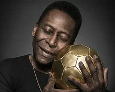

A história por trás do milésimo gol de Pelé.

Em 19 novembro de 1969, quando uma pane de transmissão privava o mundo de assistir à Missão Apollo 12, os brasileiros não perdiam um outro momento histórico: o milésimo gol de Pelé. Para o Brasil e seu "Rei", esta data não poderia ser melhor para tal façanha. Neste dia celebra-se a bandeira nacional, instituída em 1889. Pelé, por sua vez, comemora o aniversário de sua mãe. Que melhor presente para oferecer do que este "Gol Mil"? Orgulho para os brasileiros de ter o melhor jogador e certamente goleador de todos os tempos; para dona Maria Celeste Arantes ver seu filho prodígio entrar para a História. O destino, às vezes, dá um jeitinho e impediu o número 10 do Santos de alcançar. Finalmente, o árbitro coloca a bola na marca da cal e Pelé, silencioso, com as mãos nos quadris, finalmente inicia sua corrida. Depois de uma "paradinha", bate de pé direito e engana Andrada, que havia lido seu chute. "Gooool!!!" Enquanto ele corre para pegar a bola no fundo da rede para beijá-la, dezenas de fotógrafos, jornalistas e torcedores já estão invadindo o gramado para celebrar o herói, que acaba sendo levantado pela multidão, com a bola ainda nas mãos, enquanto um enxame de microfones tenta captar suas primeiras palavras. O momento não é solene apenas para os companheiros de Pelé, todos alinhados no meio de campo, que assistem sem se mover a efusão da alegria coletiva.